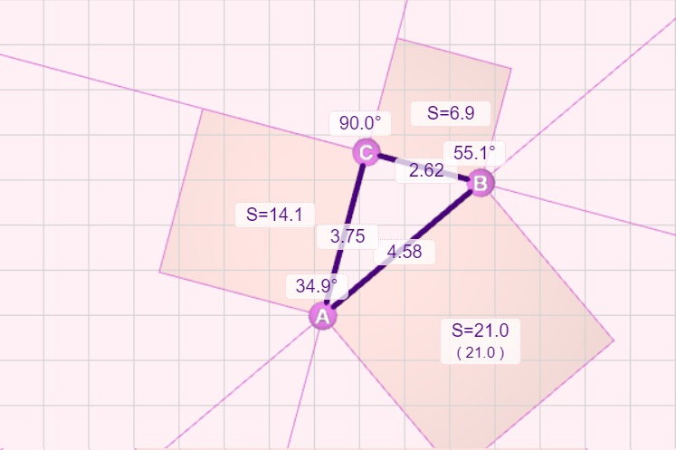

Правоъгълен триъгълник е този, на който единият от вътрешните ъгли е 90°. Страните, които сключват прав ъгъл, се наричат катети. Третата страна, която е срещуположна на правия ъгъл, се нарича хипотенуза.
Правоъгълните триъгълници имат специфични свойства, които ги отличават от останалите триъгълници. Една от най-известните теореми е теоремата на Питагор. Тя се отнася за правоъгълни триъгълници и гласи, че ако a и b са катети, а c е хипотенуза, то:
a² + b² = c².
Геометричната интерпретация на теоремата е, че ако построим квадрати на страните на правоъгълен триъгълник, то общото лице на квадратите до катетите е равно на лицето на квадрата до хипотенузата.
Теоремата на Питагор е частен на по-общата формула за намиране на ъгъл в триъгълник по дължините на страните му. Ако търсим ъгъл γ, срещуположен на страната c и сключен между a и b, тогава:
cos(γ) = (a² + b² - c²)/(2ab).
При правоъгълен триъгълник γ = 90°, следователно cos(γ) = 0 и a²+b²-c² = 0, което съответства на Теоремата на Питагор.
За решаването на следните задачи използвайте формулите от урока и интерактивното поле. Когато се проверява някакво твърдение чрез експеримент, трябва да се отчете, че показаните данни са закръглени и резултатите не са формални доказателства, а само наблюдения.
Простройте следните триъгълници и проверете кои от тях са правоъгълни:
Предложете начин, по който в интерактивното поле да може да се създава приблизително правоъгълен триъгълник, без да се ползват изчислените дължини на страни и ъгли.
Използвайки само интерактивното поле, изчислете с точност две цифри след десетичната запетая √13 (квадратен корен от 13). Използвайте Теоремата на Питагор и подходящ за целта триъгълник.
Предложете алгоритъм, с който чрез Питагоровата теорема да се определя лесно дали триъгълник е остроъгълен или тъпоъгълен. Демонстрирайте алгоритъма с примери.
Интерактивното поле съдържа 3 точки - A, B и C, които са върхове на триъгълник. Те могат да се влачат с мишката само в рамките на полето. С ляв бутон влаченето е нормално, а с десен бутон – е забавено, за да може да се постигне по-голяма точност.
Под полето има лента с опции:
За всяко подусловие конструираме търсения триъгълник. При кликване на илюстрацията към решението може да се види в реален размер.
 При създаването на триъгълника работим в режим на показани линии и квадрати. Когато линия съвпада със страна на квадрат, съответният ъгъл при върха е приблизително 90°. На илюстрацията продълженията на страните BC и CA съвпадат със страните на квадратите. Питагоровата теорема също е спазена, като и двете лица са 21 квадратни единици.
Вариант за пресмятане на √13 е чрез построяването на правоъгълен триъгълник с лице на квадрат 13 и дължина на съответната страна √13. При триъгълник с дължини на катетите 2 и 3 се получава лице на хипотенузния квадрат 22+32=13 и хипотенуза √13. Приблизително получената дтлжина е 3.61, което е приближение на √13 ≈ 3.6055512….
Ще представим алгоритъм, който определя дали връх в триъгълник е остър, прав или тъп. Чрез най-много трикратно прилагане може да се определи типа на триъгълника.
Функцията cos(γ) е:
Понеже знакът на 2ab е винаги положителен, то знакът на cos(γ) ще съвпада със знака на a² + b² - c². Затова за ъгъла срещу страна c:
За установяване на типа на триъгълника е нужно да проверим типа само на най-големия му ъгъл във връх. Този ъгъл е срещу най-дългата стена.
Трите илюстрации по-долу представят нагледно тези три случая, като и в трите страната AB е най-дълга. За лявата фигура виждаме, че сумата на лицата на прилежащите на върха квадрати е по-голяма, т.е. триъгълникът е остроъгълен. На средната фигура лицата са равни, затова триъгълникът е правоъгълен. При дясната фигура сумата от лицата на прилежащите квадрати е по-малка и триъгълникът е тъпоъгълен.